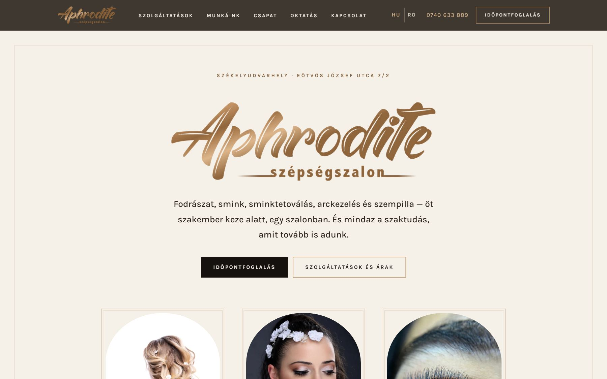
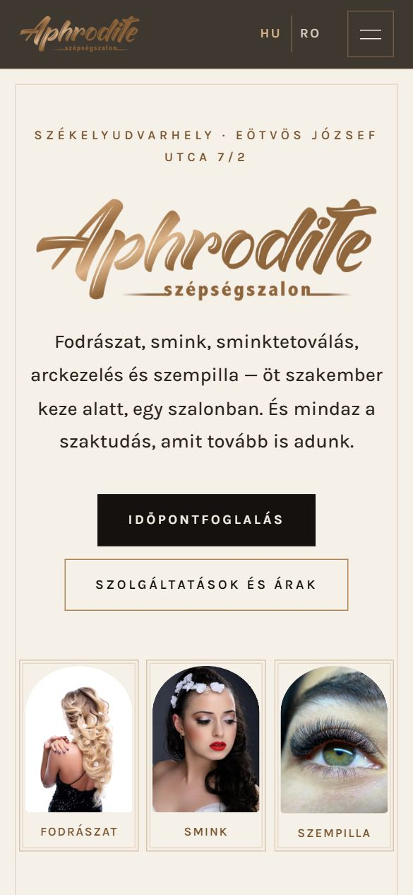

Élesben · ügyfélmunka
Aphrodite Szépségszalon
Székelyudvarhely · 5 szakember · HU + RO
Teljes szalonoldal saját online foglalóval. A foglaló a szakemberek Google Naptárára épül: aki beírja, mikor dolgozik, annál magától megnyílik az online foglalás. A szalon jóváhagyja a kérést, a vendég a saját nyelvén kap e-mailt, és maga helyezheti át vagy mondhatja le az időpontját.
Google Apps ScriptGoogle CalendarHU / ROGDPR · ANPCCloudflare DNSGitHub Pages
aphroditeszalon.ro

